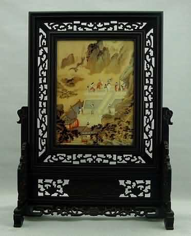

仇英（字实父，号十洲，汉族，江苏太仓人，后移居吴县）是明代有代表性与沈周，文征明和唐寅被后世并称为"明四家"、"吴门四家" ，的画家之一，亦称"天门四杰"。沈、文、唐三家，不仅以画取胜，且佐以诗句题跋，就画格而言，唐，仇相接近。仇英在他的画上，一般只题名款，尽量少写文字，为的是不破坏画面美感。因此画史评价他为追求艺术境界的仙人。存世画迹有《汉宫春晓图》、《桃园仙境图》、《吹箫引凤图》、《玉洞仙源图》、《桃村草堂图》、《松溪论画图》、《仙山楼阁图》、《秋江待渡图》等。
此《吹箫引凤图》是描绘秦穆公之女弄玉在凤楼上吹箫引来凤凰的故事。